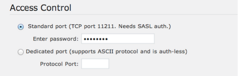
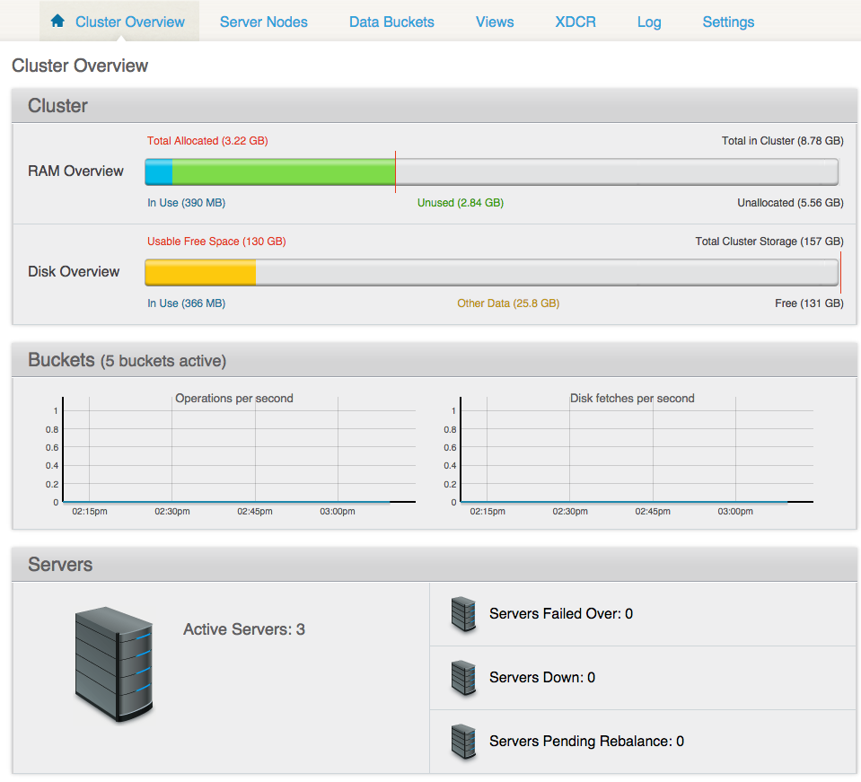
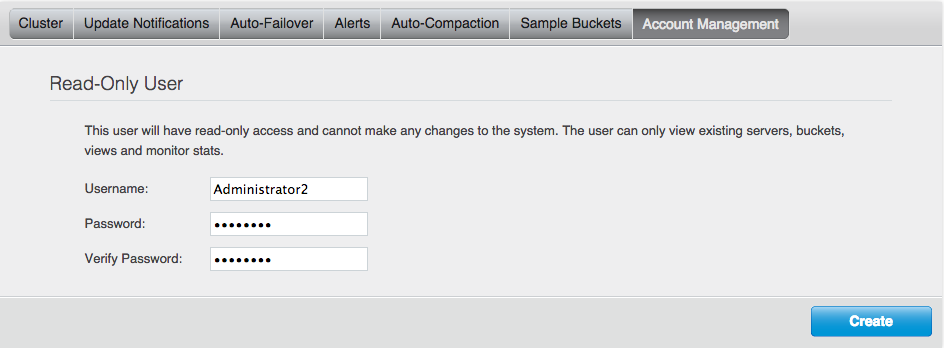

Best security practices inside the Couchbase Server cover passwords, bucket authentication, read-only administrators, access logs, and encrypted administrative access.
Couchbase Server has several passwords:
Requirement for strong passwords means that all passwords must comply with the following:
Authentication on the bucket level takes place over the CRAM-MD5 protocol and involves a single challenge-and-response cycle initiated by Couchbase Server. In the challenge sequence, the server sends a string in the format of a Message ID (email header value including angle brackets), which includes an arbitrary string of random digits, a timestamp, and the server's fully qualified domain name.
Access control is configured using the Couchbase Web Console and is set for two ports:

A new port for encrypted administrative access was provided in release 3.0 and is useful for administrators who administer Couchbase Server over the Internet.
In case you want to force an SSL connection to the Couchbase cluster, you have to lock the non-SSL ports.
While an administrative console is typically protected via an HTTPS connection, the new administrative access on port 18091 allows connection to the Couchbase Web Console over SSL, which is enabled by default. To talk over SSL to the Couchbase Web Console, connect to the following URL with your web browser: https://couchbase_server:18091
The Cluster Overview screen is displayed, from where you can access other cluster information such as server nodes, data buckets, views, and so on.

The Settings tab shows that a self-signed SSL certificate has been deployed across the cluster. This certificate can be regenerated, or replaced.
A read-only administrator can view certain activities without having ability to edit. Privileges and credentials for this user can be set in the UI.
Passwords for the read-only administrators follow the same requirements as for other Couchbase passwords: they must be strong and rotated periodically.
To set up the credentials for a read-only administrator using the Couchbase Web Console, go to and enter the administrator's username and password.

Access logs are used to monitor the administrator's access to the Couchbase cluster. These logs:
You can use an access log along with OS auditing on your server. While the OS log shows who logged in, the access log shows whether an administrator who logged in actually connected to Couchbase Server or failed to connect.